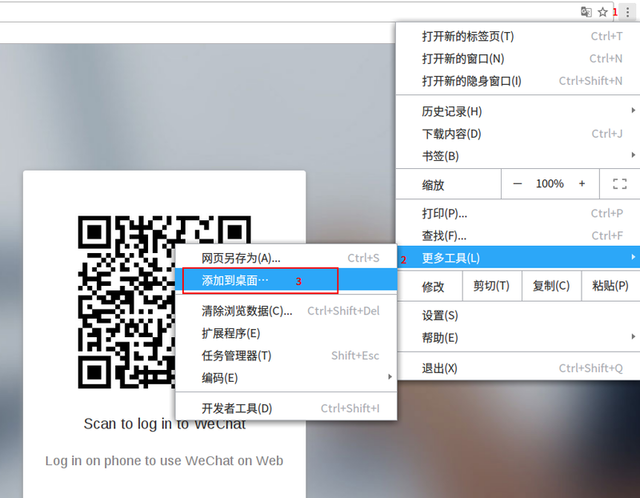

实话说,对于我这种只喜欢敲命令行的Python程序员来说,自然而言使用Linux的频率远远高于Windows,虽然买得起MBP,但是不怎么习惯其操作。然而,有些时候很揪心的事情,就是要使用微信这样的工具进行项目的交流,于是就开启了走向1条不归的死路。
初级死法
首先最简单的方式,自然是打开浏览器,然后输入https://web.wechat.com/,然后使用手机端扫码登录。谁让官方不提供Linux的版本呢?
有些时候,感觉这种死法过于无聊,于是打开Chrome浏览器,还是输入那个网址,接着进行如下的操作:

喔噻,竟然弹出了个对话框。
点击添加后,桌面竟然出现了快捷方式,好犀利。
中级死法
上面初级的死法,实在不够刺激。想直接复制图片都不行,死活要你安装什么扩展,太low,太不爽了。那么,不妨我们换种死法,试试crosswalk。
crosswalk是什么鬼,怎么压根就没有听说过。实际上它是1个混合应用的实现,关于如何操作可以查阅使用crosswalk构建混合应用。
操作完成后,我们可以看到类似如下的页面:
看起来好强悍的样子,试试才行。然后直接复制就可以把图片也直接发送了,不错不错。
最近学了下nw.js,那么自己封装下试试:
npm install nw
然后新建1个目录:
mkdir Wechat
之后在这个目录中新建1个package.json和index.html这2个文件,其中package.json中的内容如下:
{
"name": "微信",
"main": "app.html",
"author": "Fly",
"window": {
"title": "微信",
"resizable": false,
"toolbar": false,
"width": 1000,
"height": 700
}
}而app.html文件中的内容如下:
<style>
html,body{
height:100%;
}
</style>
<iframe src="https://web.wechat.com/" height="100%" width="100%" >最后我们进行打包:
nw WeChat
这样就生成了1个可执行的文件了,运行就好了。
高级死法
对于Python程序员来说,为何不用召唤python来玩下呢?
来来来,我们装个cefpython3玩玩,就4行代码搞定的事情:
from cefpython3 import cefpython as cef
cef.Initialize()
cef.CreateBrowserSync(url="https://web.wechat.com/",
window_title="wechat")
cef.MessageLoop()现在运行下,哈哈,召唤成功。
如果觉得丑,那就套层GTK或Qt咯,只要你有想法,没有做不到的。
实话说,cefpython3好难用哦,那试试python-webkit咯,你要用GTK还是Qt呢,不要犹豫了,都上吧。
说句心里话,我只是要聊天功能而已,何必搞这么多。那试试pidgin-wechat。
哎,怎么介绍的东西,体验性都这么不好,还有没有其他刺激一点的,那只好试试electron-wechat了。
实话说,无论是wechat还是网易云音乐的官方版本,都是使用nw.js构建的,那么不如直接上nodejs的electron把。只是打包之后100多M,实在不怎么喜欢,我还是召唤我的python把。
终极死法
哎,上述的死法说来说去,都是离不开Wechat的Web版本。如果能体验原生的方式就好了,那为何不用wine呢?
还是踏踏实实装个虚拟机,Virtualbox也好VMWare也好,再装个XP SP3的系统就好了。
于是,我就这样躺枪,倒下了。